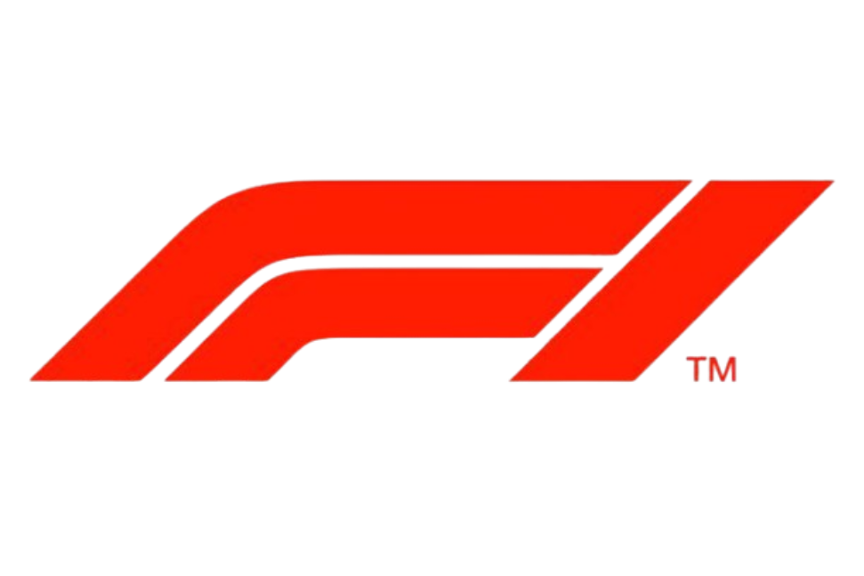

Overtake
Overtake est une plateforme en ligne dédiée à l’analyse de la Formule 1.
Vous y trouverez une large sélection de données détaillées sur les pilotes, les écuries et les championnats, ainsi que des statistiques avancées pour mieux comprendre les performances en piste.
Le site propose également un accès aux replays des Grands Prix, vous permettant de revivre chaque course et d’analyser les moments clés.
Pensé pour les passionnés comme pour les curieux, Overtake vous aide à explorer la Formule 1 sous un angle plus précis, stratégique et immersif.